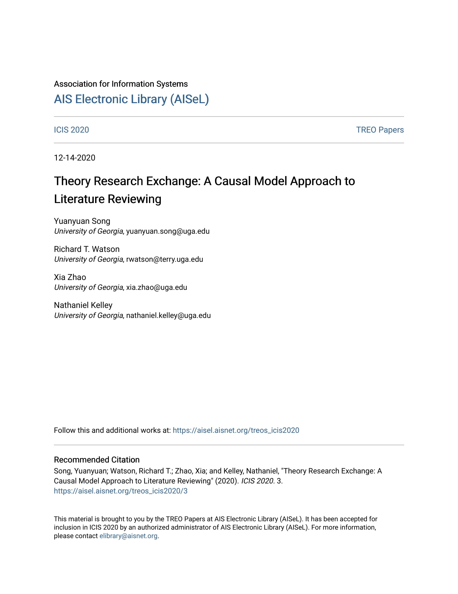

Publications
A Causal Model Analysis Approach to Literature Reviewing: A Tutorial on the Application of Graph Theory

Exploring the role of online health community information in patients’ decisions to switch from online to offline medical services

Literature Reviewing: Addressing the Jingle and Jangle Fallacies and Jungle Conundrum Using Graph Theory and NLP.
